All Cakes are priced at 2.99 GBP/200g
**Please make sure to let us know of any allergies or dietary requirements**
English Cakes
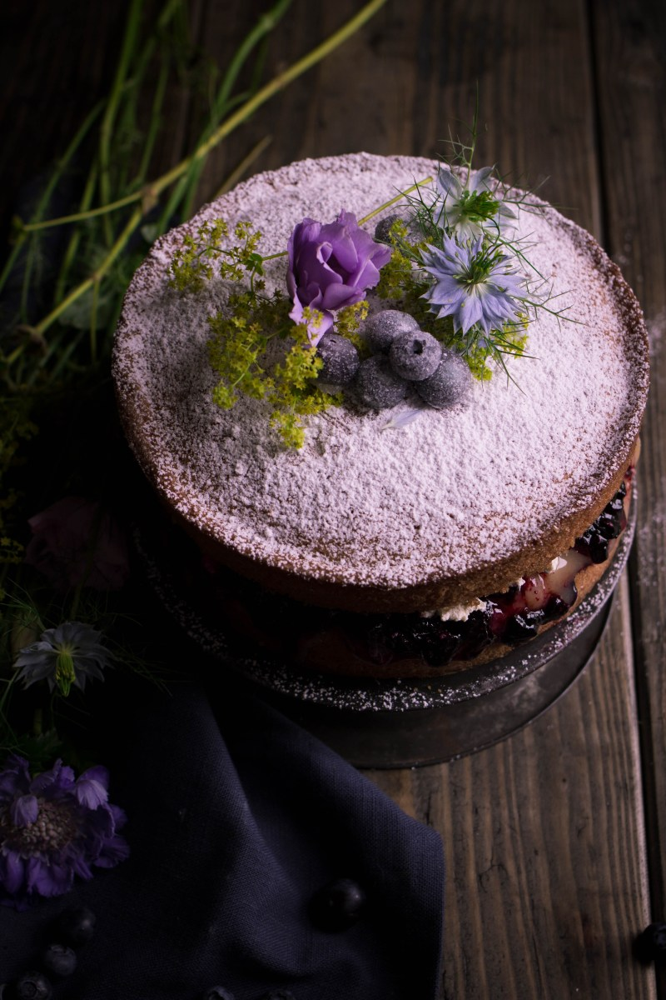
BLUEBERRY VISTORIA With hints of lemon and bursting blueberry fruitiness – subtle
additions to
traditional recipe make for a mouth-watering showstopper
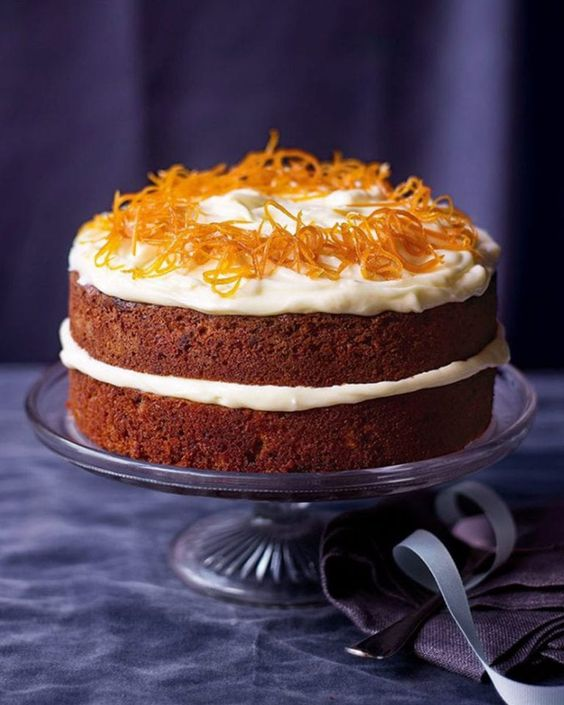
CARROT CAKE Perfectly spiced with a warmth coming from the cinnamon and
ginger, layer of orange buttercream and crunchy pecan nuts
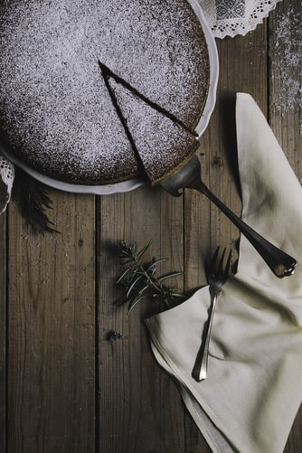
Gooey, Rich, and Super Chocolatey!
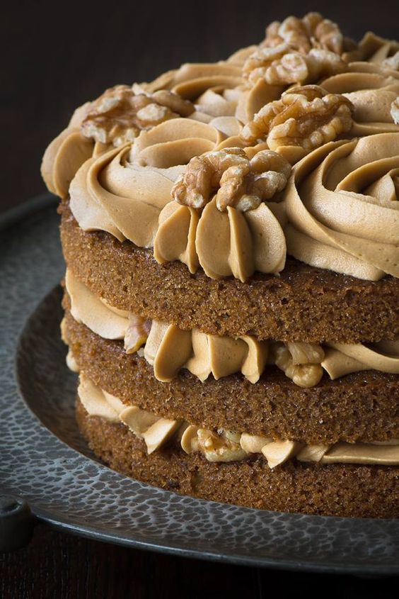
Sumptuous coffee sponge with two layers of creamy and indulgent coffee frosting,
topped
with more frosting & decorated with walnut halves
French Cakes
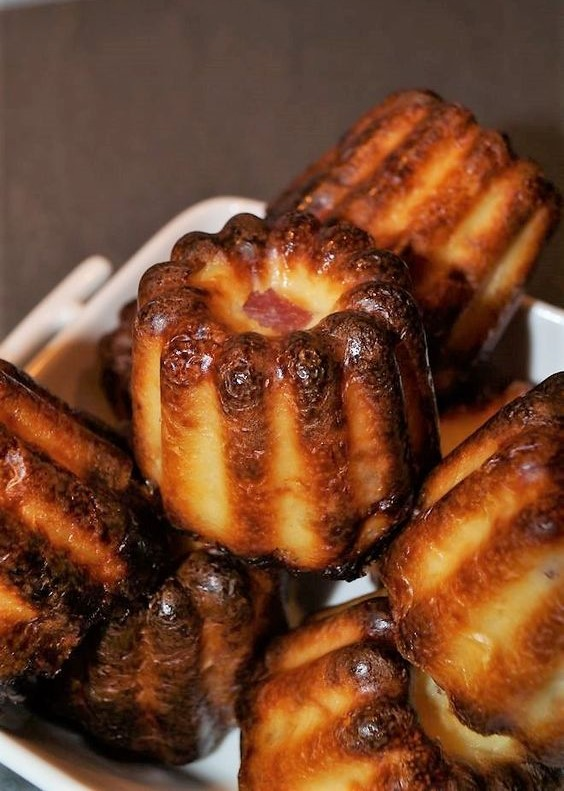
A caramelised crust with a soft custardy heart, this original Canelé is lightly
scented
with natural vanilla extract
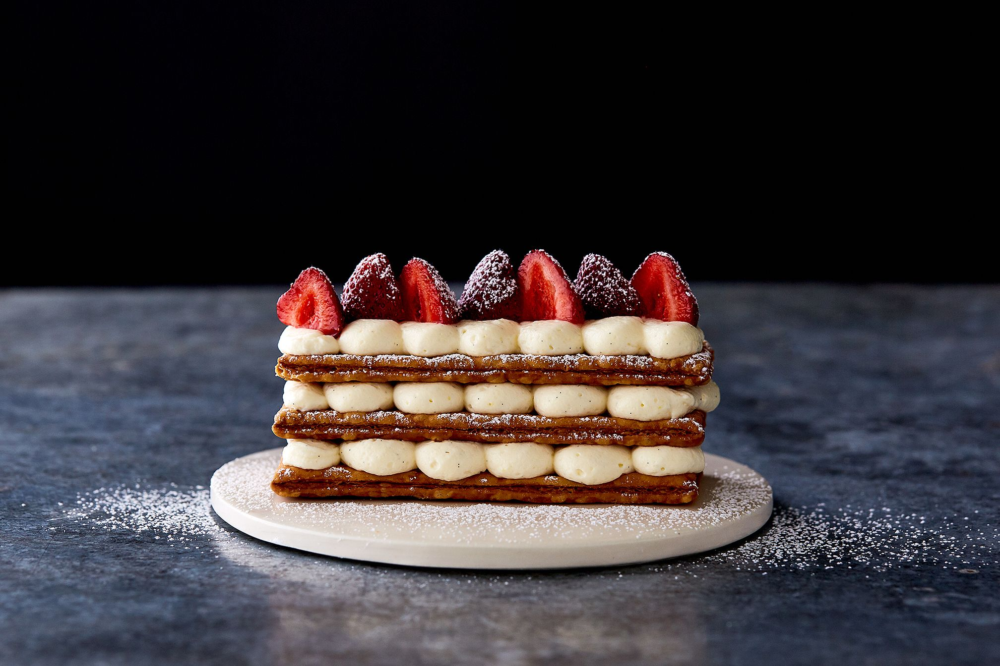
Classic dessert composed of three layers of light as air puff pastry filled with
creamy
vanilla cream and topped with locally grown juicy strawberries
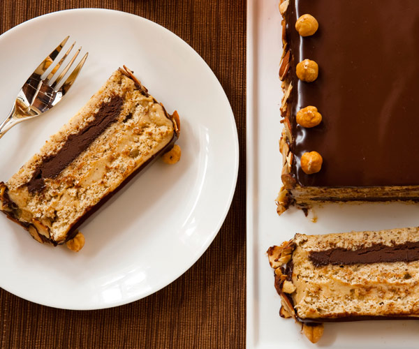
Traditional french cake, made with layers of almond or hazelnut meringue and whipped
cream
or buttercream
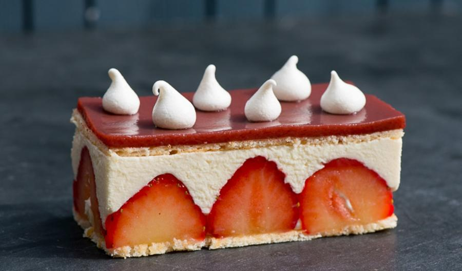
Made with two layers of genoise sponge, diplomat cream, a caramel topping and fresh
strawberries make the most delicious summer cake
Lithuanian Cakes
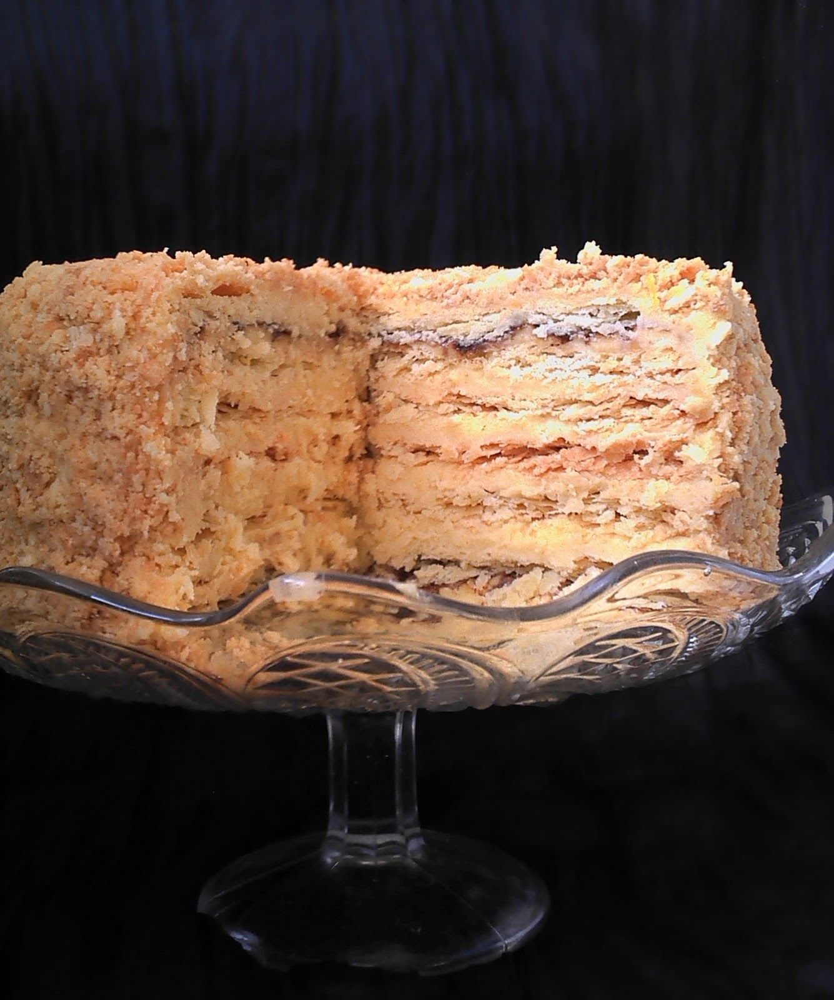
Made with lots of thin layers of crispy pastry filled with creamy custard, this
resembles
French mille-feuille but with more layers of alternating custard and pastry - it's a soul-satisfying
and
comforting dessert
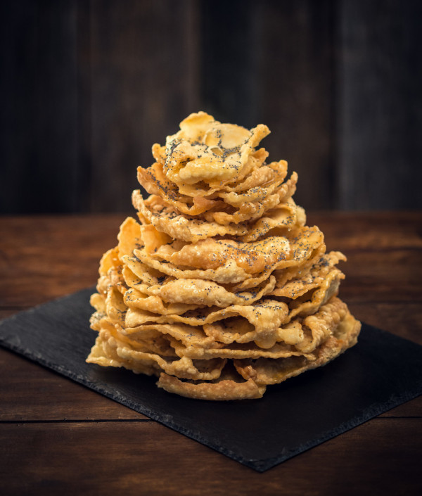
It is called a cake, but it is not in the traditional sense.. Made of thin layers of
fried crispy dough, covered in honey syrup and topped with poppy seeds. If you love honey, this is
your
thing!
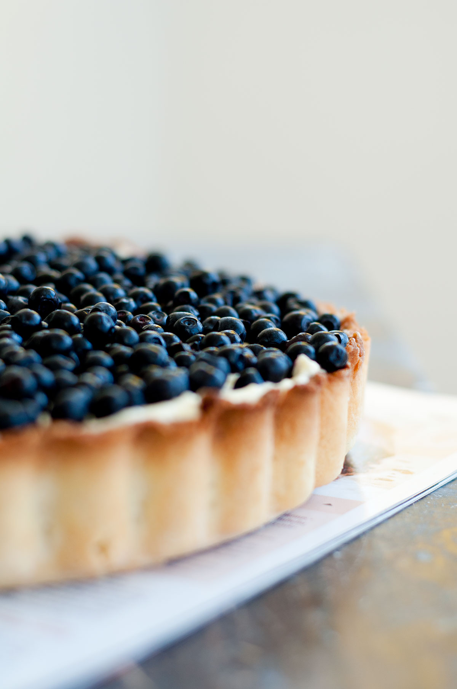
Traditional Lithuanian cake, not dissimilar to a cheesecake, but made with light as a
cloud
curd, zingy lemon and sweet blueberries filling, refreshing and great for summer parties
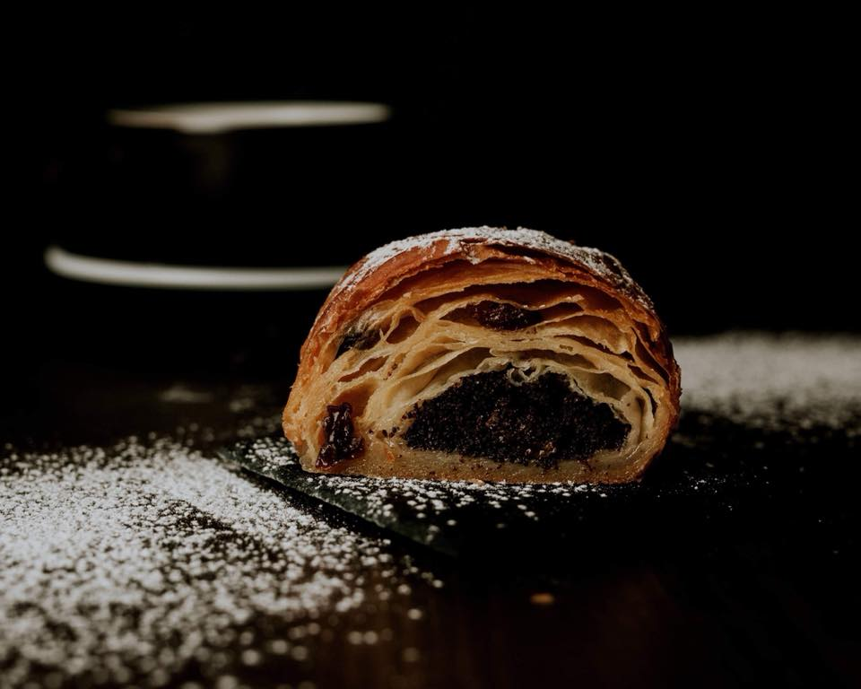
One of Lithuanian poppy seed cakes, this one is very difficult to master and was
only
evern had for very special occassions. Thin moreish layers, sprinkled with lots of poppy seeds - go
on,
treat yourself